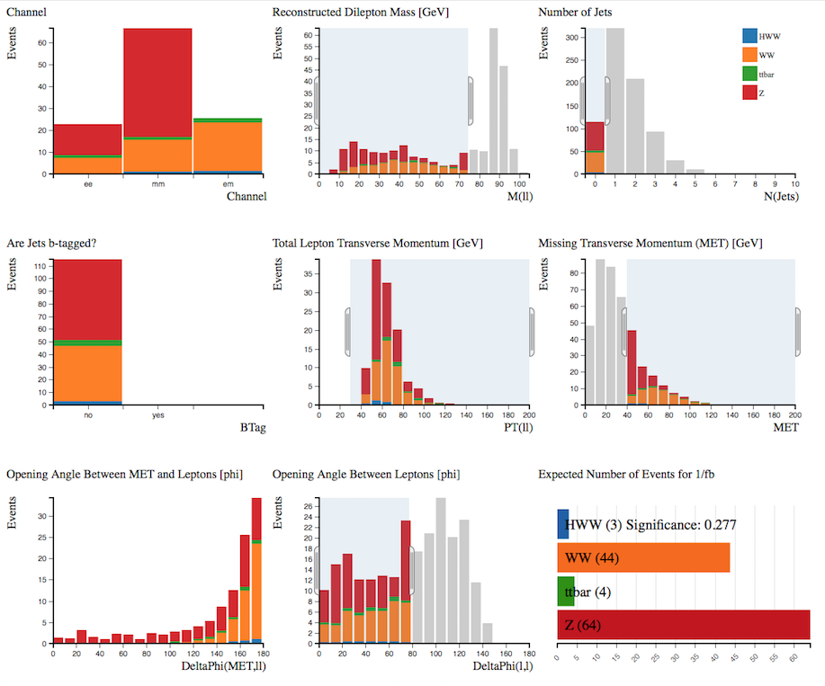

Example: Find the Higgs
Follow the steps of a real ATLAS analysis using Histogram Analyser
$$H\rightarrow W^+W^- \rightarrow \ell^+ \ell^-\nu \bar \nu$$
($$\ell$$ = lepton = electron or muon)
We are looking for a Higgs boson which decays into two $$W$$ bosons which subsequently decay into leptons and neutrinos.
The major background contributions to the search in this decay mode are top (top quark pair and W+top quark), $$WW$$ and $$Z$$+jets events.
Use the cursor to implement the following cuts, one by one.
As you apply the cuts, you should see the distributions changing.
Try to understand why each of the distributions change. Think of the physics motivating the cuts.
To clear your selection on a specific histogram click on the white background within the histogram area.
To clear all your selections click on "Histogram Analyser" under Get Started in the main top menu.
Now let's try to separate the signal from the background using Histogram Analyser
Higgs boson + 0 jet
We want to select events which contain two leptons, high missing transverse momentum and no jets.
Select:
-
Number of Jets = 0 : We have decided this analysis is specifically with zero jets.
-
Reconstructed Dilepton Mass < 75 GeV : The $$Z$$ events are the major background in this analysis. The $$Z$$ boson has a mass of 91 GeV, which is reconstructed from the mass of the two leptons. Requiring Reconstructed Dilepton Mass to be less than 75 GeV removes over 90 % of the Z events.
-
Total Lepton Transverse Momentum > 30 GeV : For $$Z$$ boson events, the total lepton transverse momentum peaks at zero since the transverse momenta of both leptons cancel each other. For $$H\rightarrow WW$$, the opening angle between leptons tends to be small, so the total lepton transverse momentum tends to be greater than zero.
-
Missing Transverse Momentum > 40 GeV : This cut should remove $$Z$$ background since there tends to be little missing transverse in $$Z$$ events. $$Z$$ boson decays to charged leptons do not have any neutrinos in the final state while the other processes do.
-
Opening Angle between Leptons < 80 : We know that the opening angle between leptons for $$H\rightarrow WW$$ tends to be small whereas for Z events the opening angle tends to be large.
The dominant background after all these cuts in the
Higgs boson + 0 jet channel comes from $$WW$$ and $$Z$$+jets.
3 Higgs events are identified, yielding a significance of 0.277

Higgs boson + 1 jet
Select:
- Number of Jets = 1
- no b-tagged jets
- electron-muon channel only
- Reconstructed Dilepton Mass < 70 GeV
- Total Lepton Transverse Momentum > 30 GeV
- Opening angle between leptons < 80

The dominant background after all these cuts in the
Higgs boson + 1 jet channel comes from $$WW$$ and top pair
production.
2 Higgs events are identified, yielding a significance of 0.517.
Have a go yourself!
Perhaps try the $$H\rightarrow W^+W^-$$ + 0 jet, but separate it into leptonic channels and tune the cuts to maximise the number of $$H\rightarrow W^+W^-$$ events with maximum significance.
Or try something completely different...